COM–δ: Material Possibilities
Parametric Control of Matter, Light, and Deposition BehaviorInstructors: Zhoufan Chen, Alexander Kalachev
Collaborative Project (Role: Concept development, KUKA debugging, material implementation)
Teammates: Yuanyuan Cao, Xueying Ding, Chongtong Gao, Yuze Gao, Yuxuan Liu
Tools & Technologies: Robotic arm (KUKA), custom clay extrusion system, parametric modeling (Grasshopper), computational toolpath control, pneumatic extrusion components, material testing and iterative fabrication
Introduction
Material Possibilities investigates how material form can emerge from computational control rather than predefined geometry. Instead of treating clay as a passive medium shaped by static molds or fixed toolpaths, the project frames clay deposition as a dynamic system governed by algorithmic rules, temporal parameters, and machine behavior.
By integrating robotic 3D printing with parametric control logic, the system explores how variations in extrusion speed, path direction, deposition pauses, and layer sequencing directly influence material accumulation, structural stability, and surface texture. Architecture is approached not as a finished object, but as the byproduct of a computational process in which material behavior is continuously negotiated.
Through this lens, clay becomes a record of computation—capturing time, interruption, and control decisions within its layered structure.
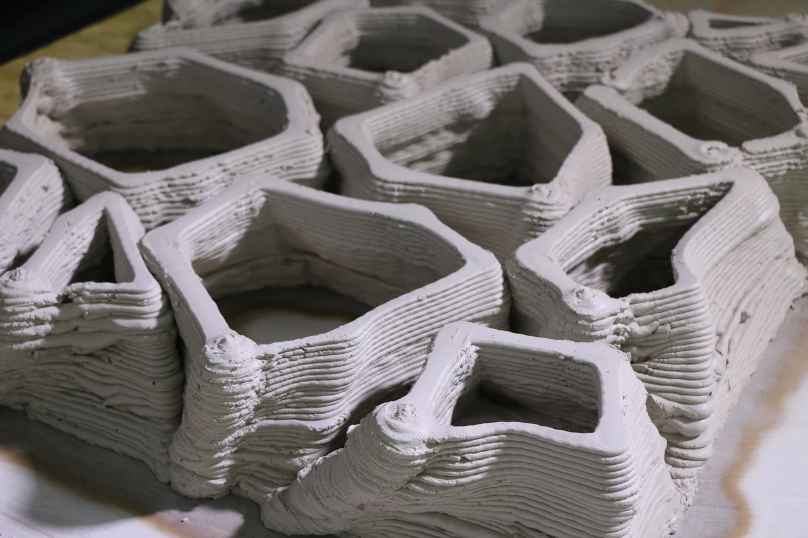
Concept
At the core of the project is a rule-based deposition system that translates computational parameters into material behavior. Instead of designing a final form directly, the project defines a set of controllable variables—toolpath geometry, extrusion timing, nozzle velocity, and stopping intervals—that collectively determine how matter is distributed in space.
The system operates through iterative loops. Each printed layer responds to the accumulated conditions of the previous one, allowing form to emerge from local interactions rather than global formal intention. By introducing controlled pauses and speed modulation during extrusion, the process exploits material accumulation and collapse as design drivers rather than errors to be eliminated.
This approach shifts authorship from form-making to system design. Architectural qualities—such as porosity, thickness variation, light diffusion, and surface roughness—are not explicitly modeled but arise from the interaction between computational logic and material constraints.
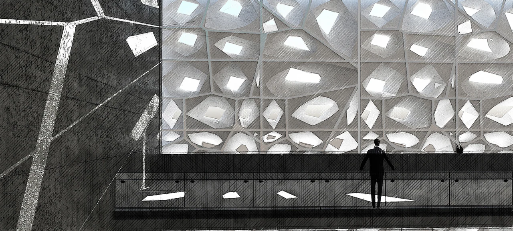
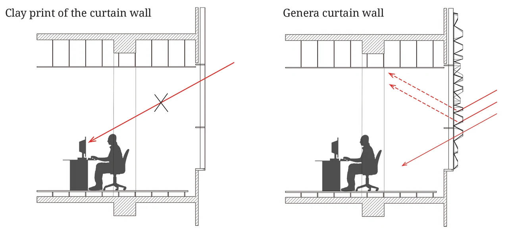
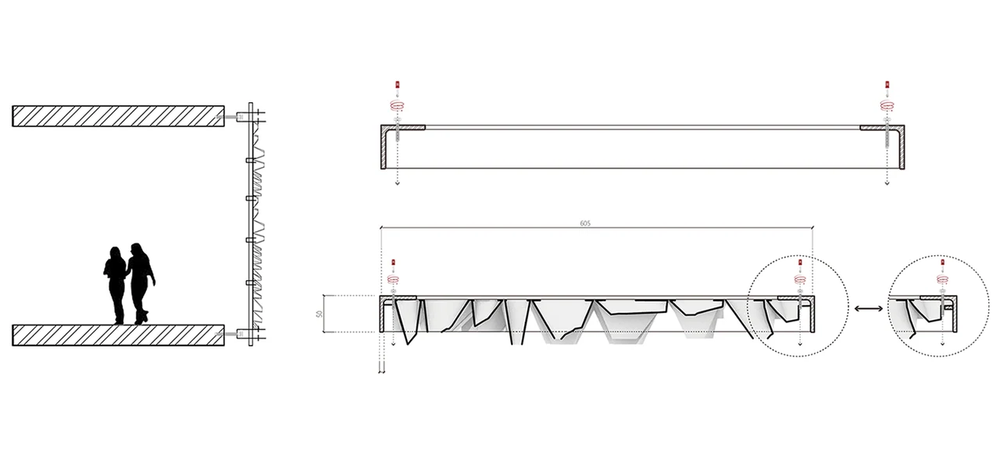
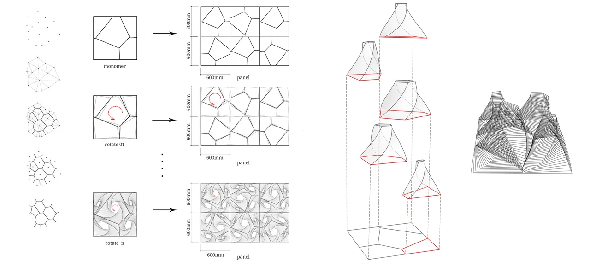
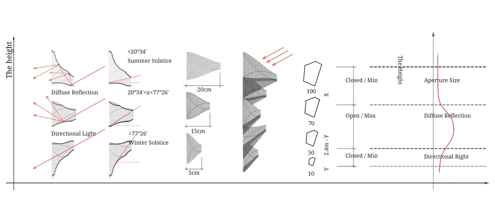
Computational Strategy
The computational workflow is structured around three interacting layers:
-
Path Generation
adapts based on local spatial rules.
-
Temporal Control
interruptions function as computational variables that control material accumulation and structural articulation.
-
Feedback Through Failure
informs subsequent parameter adjustments, allowing the system to self-correct across iterations.
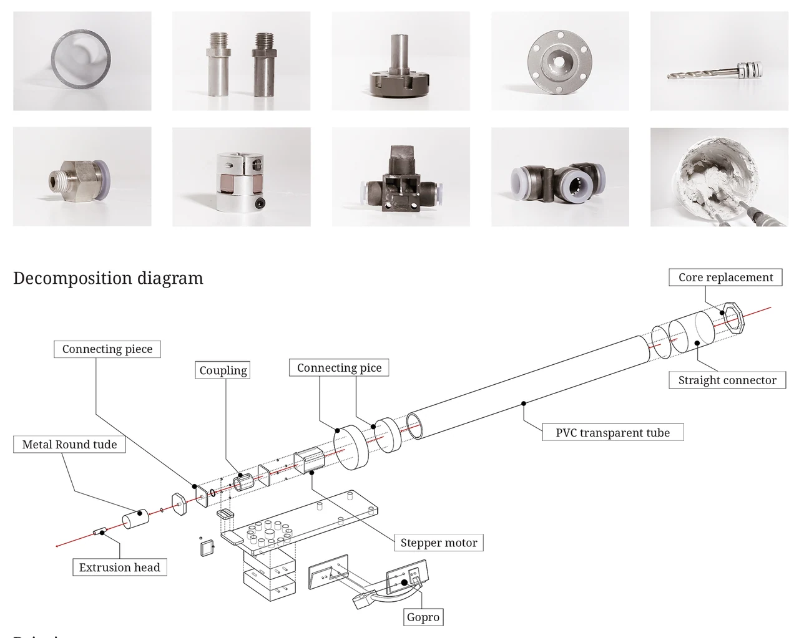
Emergent Architectural Behavior
Architectural applications, such as light-modulating curtain wall systems, emerge as consequences of the computational process rather than predefined goals. The layered texture produced by stacked deposition lines diffuses incoming light, while variations in aperture size and depth regulate brightness and glare.
Rather than optimizing for a single performance outcome, the system demonstrates how architectural effects can arise from computational material behavior. The resulting forms act as spatial records of algorithmic decisions, embedding time, control, and negotiation within matter itself.
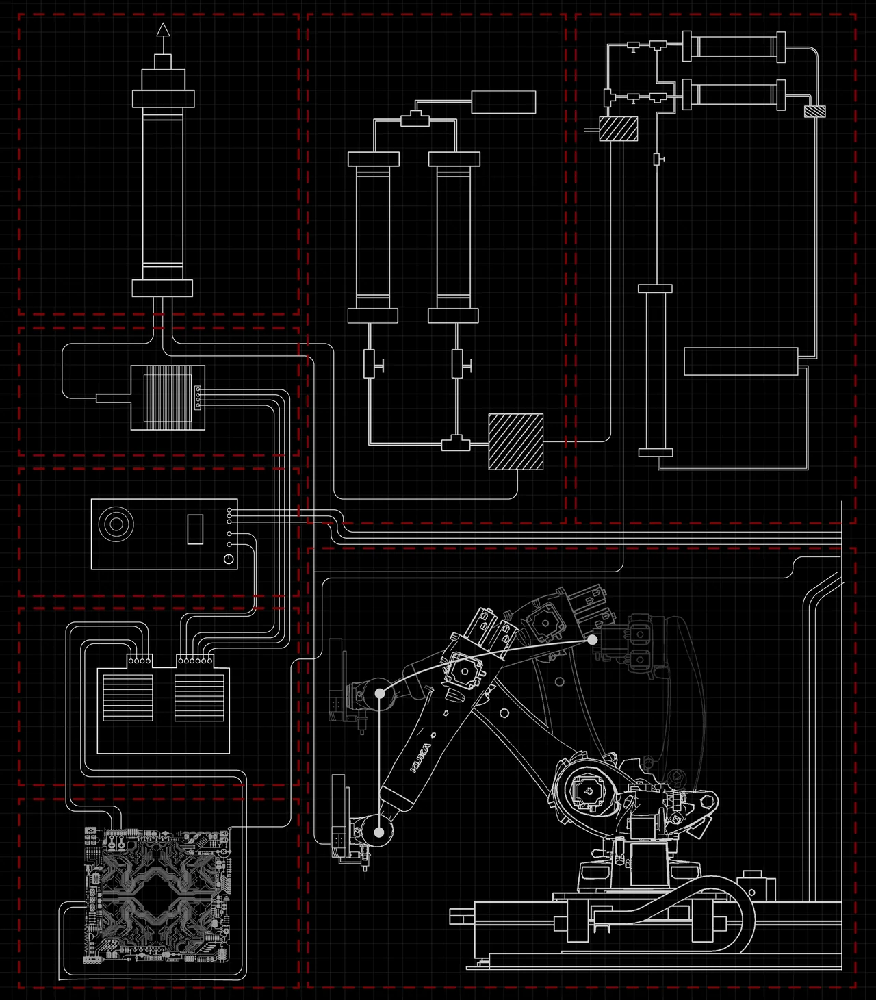
Positioning Within Computation
This project is positioned within computational design as a study of material systems driven by algorithmic logic. It emphasizes:
-
Rule-based generation over static modeling
-
Temporal parameters as design variables
-
Emergent form as a result of system behavior
-
Fabrication as a computational feedback loop
By treating material deposition as computation in action, Material Possibilities reframes robotic fabrication not as a tool for producing geometry, but as a medium for exploring how algorithms can shape matter over time.
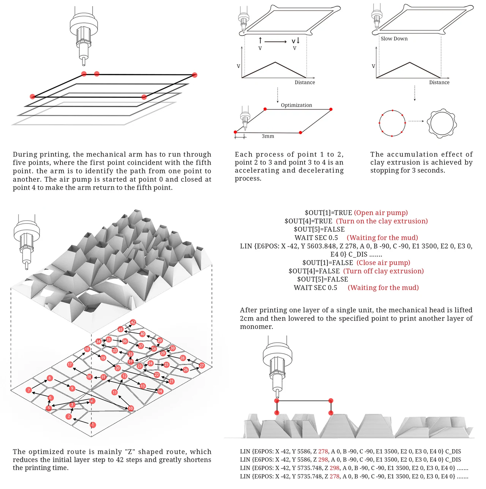
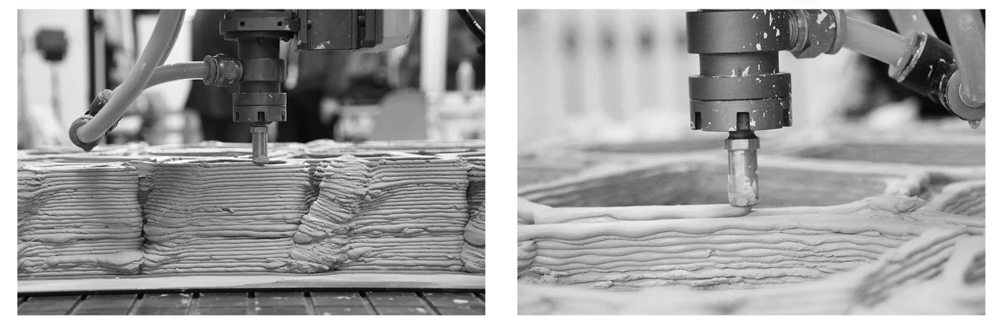
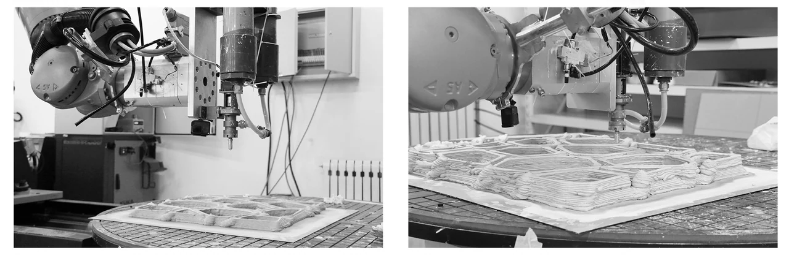
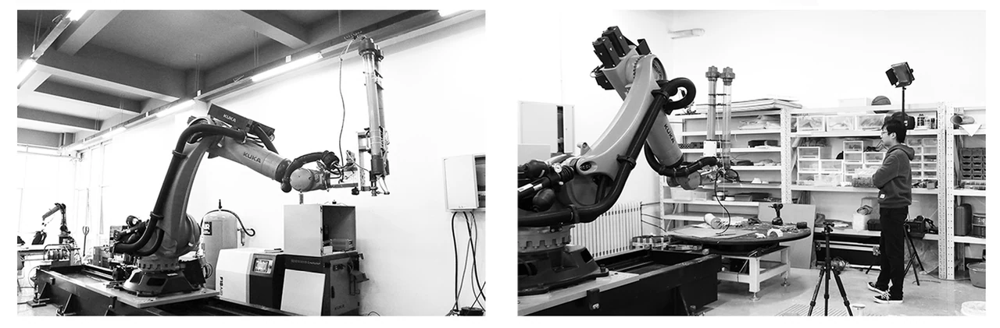
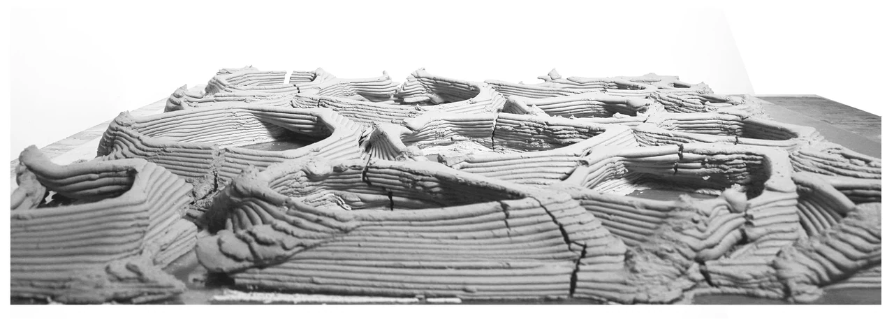